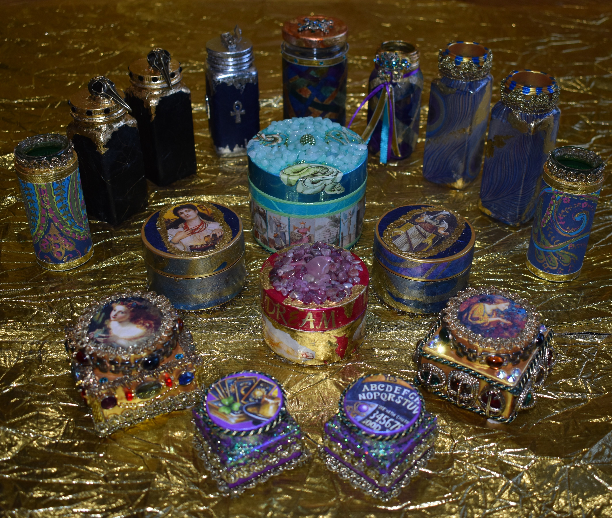
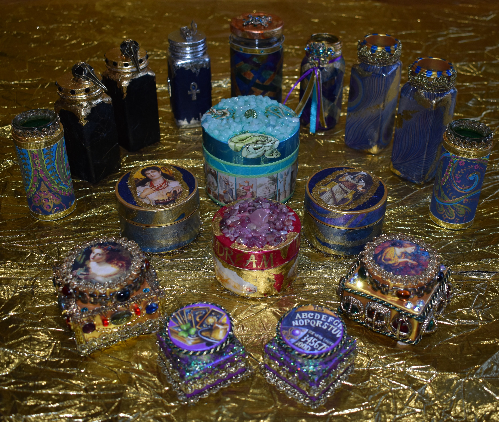

test
 
Ravens and Rabbits Crafts is my playground for displaying my crafts that are inspired by the magical, the mystical, and the witchy. I enjoy working with many different mediums. I move from jewerly-making to needle-felting; from decoupage to sculpting. MY need to create has become Ravens and Rabbits Crafts; A place where I can share my creations with you.

Ravens and Rabbits Crafts is my playground for displaying my crafts that are inspired by the magical, the mystical, and the witchy. I enjoy working with many different mediums. I move from jewerly-making to needle-felting; from decoupage to sculpting. MY need to create has become Ravens and Rabbits Crafts; A place where I can share my creations with you.